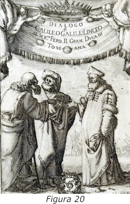

¿Es Dios un Matemático?
Autor: Mario Livio
Año:
Editorial:
País:
Pesonajes (personas nombradas en el libro):
Pitágoras de Samos, Aristóteles, Platón, Jesucristo, Euclides, Galileo, Descártes, Newton, Leibniz, Einstein, Gödel, Cantor, etc.
Resumen:
Es un libro escrito en prosa, no es un libro técnico, pero me causó una gran fascinación mientras lo leía, pues a través de sus páginas pude comprender el gran poder que tiene esta rama del conocimiento, y darme cuenta que es el lenguaje más importante para la humanidad. En sus primeros capítulos sí hace referencia a Dios principalmente porque se habla de los matemáticos de la antigua Grecia y la doctrina que practicaban hacia los números, para ser específicos, sobre los pitagóricos y su adoración a un ente matemática llamada Tetraktys.
Mucho se habla sobre la relación de las matemáticas con la lógica Aristotélica, es decir, la forma de axiomatizar y cómo se utilizan las estructuras lógicas para demostrar hechos matemáticos, pero luego el autor llega a la conclusión de que la lógica solo fue combustible para que la matemática, con el paso de poco más de 4 milenios, se haya desarrollado de manera sorprendente.
En los demás capítulos el autor se dedica a hablar sobre muchos personajes y sucesos importantes para la matemática, habla sobre Platón, Euclides, Arquímedes, Galileo, Descartes, Newton, Leibniz etc. Hace mucho énfasis en la forma en que la matemática encaja para poder explicar el universo y la naturaleza, a tal grado de entrar en debate sobre si las matemáticas fueron inventadas por Dios para crear el universo y el ser humano solo las descubrió, o si las matemáticas son completamente una invención del ser humano. De hecho se llega a mencionar que las matemáticas están presentes en la naturaleza sin necesidad de que el ser humano las observe, es decir que la mente del ser humano no necesita estar presente para que las matemáticas estén ahí, incluso dice que la forma en que la mente funciona puede ser modelada matemáticamente.
También hay unos capítulos que el autor dedica a hablar sobre aquellas ocasiones en que alguna idea matemática fue desarrollada sin la intención de aplicarla, es decir, que nació de la matemática pura, pero que años o siglos más tarde encajó perfectamente con alguna aplicación a otra rama de la ciencia o ingeniería.
Como en todo buen libro debe haber una parte contrastante, después de discutir su eficacia y de hablar tan bien de las matemáticas, hace referencia a sus momentos oscuros, sus atrasos, y situaciones de incertidumbre que los matemáticos tuvieron que pasar en determinado momento. Después de que uno como lector se empieza a hacer la ilusión de que esta rama del conocimiento es todopoderosa, el autor habla sobre Gödel y su teoría de incompletitud y cómo marcó los límites o fallos de la matemática.
Pero a pesar de eso, el autor concluye su libro diciendo que la matemática ha acompañado al hombre y lo seguirá acompañando para su bien.
Opinión propia:
Este libro lo compré por mera casualidad, pues en una ocasión con unos amigos decidimos entrar a una librería a comprar un rompecabezas, y al momento de pagar, un ejemplar con el título “¿Es Dios un matemático?” posó frente a mí. Desde pequeño me he considerado un aficionado a las matemáticas, en el sentido de que a pesar de que no soy experto en la materia y tampoco la estudio de tiempo completo, siento un gran aprecio y pasión por todo lo que se puede hacer con ellas.
Ilustraciones referentes al libro:
